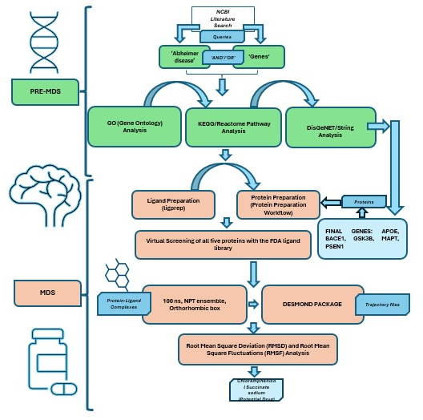

Projects
Ongoing Projects
- Physico-chemical fingerprinting of Genomic elements. Working with the hypothesis that genomic DNA sequences must convey their functional roles through their biophysical properties. We are characterising Promoters, Exon-start, Exon-end, Enhancers, UTRs and CDS to differentiate them on the basis of their structure and energy profiles.
Finished Projects
Gene to Drug multitargeted approach: Alzheimer’s Disease [MANUSCRIPT UNDER PREPARATION]
Abstract: Alzheimer's disease (AD) represents a progressive neurodegenerative disorder marked by pronounced declines in both memory and cognitive capacities. Pathologically, it manifests through the aggregation of extracellular amyloid β-peptides, intracellular hyperphosphorylated tau proteins, and perturbations in redox equilibrium. In recent years, there has been a notable surge, approximately tenfold, in research endeavors to elucidate effective therapeutic modalities to combat this debilitating affliction. An important advancement in Alzheimer's research has entailed exploring the intricate relationships among diverse genes and disease trajectories. Within this study, a group of genes was discerned utilizing a semi-automated literature-mining methodology at the National Center for Biotechnology Information (NCBI). The primary objective of this research is to implement a multi-targeted gene-to-drug strategy, establishing connections between these genes and a prospective drug candidate, thereby elucidating their direct involvement in the progression of AD. To corroborate the veracity of our results, we conducted simultaneous validation utilizing DisGeNET, which evaluated the association scores between the genes and the disease. Further, we utilized the Drug Bank library for potential drug repurposing, employing exhaustive gene-centric searches alongside high-throughput virtual screening, standard precision docking, and extra precise docking. Docking scores across all five proteins ranged from -5.730 kcal/mol to -9.269 kcal/mol for compounds in the FDA-human-approved library. Our study stands out for its meticulous consideration of multiple protein targets in Alzheimer's treatment and for conducting molecular mechanics-based and generalized surface area calculations, yielding outcomes indicating promising drug candidates. Furthermore, we conducted molecular dynamics simulations over 100 nanoseconds in a neutralized SPC water medium. The analytical framework incorporated root mean square deviation assessments, fluctuations, and simulated interactions among the protein-ligand complexes, water molecules, and proteins. Most complexes exhibited deviations of less than 3 Angstroms (Å), indicating their considerable stability. Fluctuations were minimal, with only specific residues demonstrating noteworthy variations alongside a significant network of interactions between the protein and ligand. Our analysis suggests Chloramphenicol (CP) succinate sodium as a potential candidate for Alzheimer's treatment, though rigorous experimental validation is imperative before clinical application.
A validatory analysis on the effects of BACE1 and regulatory neighbours in the progression of Alzheimer’s disease [MINOR PROJECT, III SEMESTER, MS BIOINFORMATICS]
Abstract: Alzheimer’s disease is a progressive, terminal neurodegenerative disease that affects memory and other important mental functions. Common hallmarks of Alzheimer’s disease include the extracellular amyloid B-peptides aggregation and intracellular deposition of elevated levels of hyperphosphorylated tau protein along with a failure in redox homeostasis. In recent years, research has increased ten folds to find an effective treatment for this disease. The studies on substantial association of various genes with this disease’s progression is a significant milestone in Alzheimer’s research. In the last decade, the Alzforum has done a tremendous job in collecting and providing a list of all the involved genes based on published research. This study is based on a group of genes put together by a semi-automated literature mining approach at NCBI to analyze their inexplicit involvement in the progression of Alzheimer’s disease. To further our findings, we simultaneously conducted a DisGenet validation for BACE1 and other genes in the list based on gene-disease association scores. While most of them were listed with good scores, the others had no mention whatsoever. We also ran a differential expression analysis on using two controls and two diseased samples from Sequence Read Archive (SRA) database and identified seven out of the nine genes of interest among the Differentially Expressed Genes (DEGs). Moreover, with this study -- we aim to perform a validatory analysis on the effect of these genes at the expression of the BACE1 gene and construct a Gene Regulatory Network (GRN) for these genes with gene expression data. We screened the expression datasets for Alzheimer’s disease at National Center for Biotechnology Information (NCBI) using Gene Expression Omnibus (GEO) database with a semi-automated approach to extract the expression datasets for these genes and used it along with an alternate mining of Transcription Factors (TFs) among these genes using TRRUST (Transcriptional Regulatory Relationships Unraveled by Sentence-based Text-mining) database to generate the importance scores for every predicted interaction using Arboreto library in Python. We used the interaction information in source-sink form along with the scores to construct the network of these genes using Cytoscape. Furthermore, to establish a validatory ground for our initial hypothesis of involvement of these genes in the progression of Alzheimer’s disease, we provided insight into their effect on BACE1 expression.